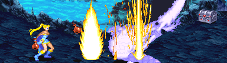

FROST SALAMANDER
잊혀진 세계 (9-B) 보스 '프로스트 샐러맨더' |
기본 정보
클리어 시간 측정의 시작 시점
플레이어가 움직일 수 있을 때 부터
최단 시간 클리어 기록
드워프를 제외한 전 클래스 4:55 |
|||||||||
드랍 가능한 아이템 - 돈 + 점수 아이템 + 그외 아이템의 구성으로 떨어진다.
돈 : 5sp x3 + 1spx3 (18sp) / 10sp x5 (50sp) / 50sp x3 (150sp) / 100sp x2 (200sp) / 500sp x1 (500sp)
기타 : 스크롤(scroll) 최대 8레벨
| 점수 아이템 : | |
| 반지류 : | |
| 도구류 : | |
| 완드류 : | |
| 장비류 : | |
냉기의 속성을 지닌 샐러맨더로 플레임 샐러맨더와는 반대의 성질을 가지고 있다.
(현재 룰 상에서 이런 속성의 샐러맨더는 없다.)
색이 파란색 계열로 바뀌고 냉기의 속성을 지니고 불공격 대신 냉기 공격을 한다는게 다르지만 그것을 빼면 정말 똑같다. -들고있는 창이 좀 다르긴 하다- 그러나 냉기의 속성은 딱히 막아낼 아이템이 없는데다가 (냉기의 방패는 도움이 안된다) 헬하운드 대신 더 까다로운 가고일이 나오기 때문에 똑같은 방법으로 싸우라면 더 어렵다.
그러나......냉기의 속성이니 만큼 불의 속성을 지닌 아이템이 전부 통하며 결정적으로 LB오일에 너무도 취약하다. 그래서 키메라 만큼이나 허무하게 클리어 할 수 있다.
(현재 룰 상에서 이런 속성의 샐러맨더는 없다.)
색이 파란색 계열로 바뀌고 냉기의 속성을 지니고 불공격 대신 냉기 공격을 한다는게 다르지만 그것을 빼면 정말 똑같다. -들고있는 창이 좀 다르긴 하다- 그러나 냉기의 속성은 딱히 막아낼 아이템이 없는데다가 (냉기의 방패는 도움이 안된다) 헬하운드 대신 더 까다로운 가고일이 나오기 때문에 똑같은 방법으로 싸우라면 더 어렵다.
그러나......냉기의 속성이니 만큼 불의 속성을 지닌 아이템이 전부 통하며 결정적으로 LB오일에 너무도 취약하다. 그래서 키메라 만큼이나 허무하게 클리어 할 수 있다.
주요 특성
▶ 온몸이 냉기에 휩싸여 있기 때문에 약간이라도 닿으면 얼어서 쓰러지고 만다. 불의 속성처럼 막을 수 있는 방법이 없다. 또한 냉기의 검을 제외한 모든 냉기의 속성을 지닌 아이템/주문과 컨주어 엘리멘탈(오른쪽)이 통하지 않는다. (물론 냉기의 검이 통하는지 아닌지는 치트를 써야 알 수 있다.)
▶ 일반 공격을 연속으로 8번을 맞거나 크리티컬이 나오거나 몇몇 특정 공격을 맞으면 쓰러진다. 그러나 일반적으로 맞으면서 플레이어 쪽으로 끌려오는 경우가 있어서 그냥 때리다가는 몸체에 닿을 가능성이 높다. 단, 8히트를 넘기더라도 샐러맨더가 공중에 떠 있는 상태일 때 계속 공격을 성공시킬 수 있다.
▶ 몸을 앞뒤로 심하게 흔들고, 자리 이동을 할 때 돌진이나 점프를 제외하면 조금씩 미묘하게 움직이기 때문에 종잡을 수 없다. 일반 공격은 맞는 경우 앞뒤로 더욱 심하게 흔드는 경우도 있어서 위험하다.
▶ 몸체에만 판정이 있고 꼬리로 몸을 지탱하고 있기 때문에 타점이 높은 편이다. 경우에 따라 상단 공격이 가능하지 않은 공격은 빗나갈 가능성도 있다.
▶ 화염의 검, 서리의 검, 폭풍의 검 (이하 속성검)에 맞을 경우 바로 쓰러지는데 공중에 떴을 때도 연속해서 공격을 성공시킬 수 있다. 따라서 이들 속성검을 이용하면 어렵지 않게 제압 할 수 있다. 대신 가고일이 무척 방해된다.
★ 모든 몸체로 부딪치는 공격은 어떤 종류의 방패라도 가드 할 수 있다. -꼬리 돌리기는 제외- 심지어는 그냥 서 있는 플레임 샐러맨더의 몸체에 닿는 것 마져도 가드 할 수 있다. 가드하다가 구석에 몰리면 한참동안 강제로 가드만 신나게 하는 경우도 발생한다.
▶ 일반 공격을 연속으로 8번을 맞거나 크리티컬이 나오거나 몇몇 특정 공격을 맞으면 쓰러진다. 그러나 일반적으로 맞으면서 플레이어 쪽으로 끌려오는 경우가 있어서 그냥 때리다가는 몸체에 닿을 가능성이 높다. 단, 8히트를 넘기더라도 샐러맨더가 공중에 떠 있는 상태일 때 계속 공격을 성공시킬 수 있다.
▶ 몸을 앞뒤로 심하게 흔들고, 자리 이동을 할 때 돌진이나 점프를 제외하면 조금씩 미묘하게 움직이기 때문에 종잡을 수 없다. 일반 공격은 맞는 경우 앞뒤로 더욱 심하게 흔드는 경우도 있어서 위험하다.
▶ 몸체에만 판정이 있고 꼬리로 몸을 지탱하고 있기 때문에 타점이 높은 편이다. 경우에 따라 상단 공격이 가능하지 않은 공격은 빗나갈 가능성도 있다.
▶ 화염의 검, 서리의 검, 폭풍의 검 (이하 속성검)에 맞을 경우 바로 쓰러지는데 공중에 떴을 때도 연속해서 공격을 성공시킬 수 있다. 따라서 이들 속성검을 이용하면 어렵지 않게 제압 할 수 있다. 대신 가고일이 무척 방해된다.
★ 모든 몸체로 부딪치는 공격은 어떤 종류의 방패라도 가드 할 수 있다. -꼬리 돌리기는 제외- 심지어는 그냥 서 있는 플레임 샐러맨더의 몸체에 닿는 것 마져도 가드 할 수 있다. 가드하다가 구석에 몰리면 한참동안 강제로 가드만 신나게 하는 경우도 발생한다.
패턴 분석
※ 붉은색은 파이터가 입는 데미지, 푸른색은 매직 유저가 입는 데미지.
클레릭/드워프는 파이터에 가까운 데미지를, 시프/엘프는 매직 유저에 가까운 데미지를 입는다.
클레릭/드워프는 파이터에 가까운 데미지를, 시프/엘프는 매직 유저에 가까운 데미지를 입는다.
| 찌르기 (22/34) | |
| 들고 있는 창으로 푹 찌른다. 은근히 리치도 길고 빠른 편이라서 순간 당하기 쉽다. 맞을 경우 쓰러지게 된다. 대신 판정범위가 위 아래로는 좁아서 일직선상에만 있지 않는다면 맞지 않는다. |
|
| 얼음 조각상 (14/21) | |
| 순간 얼음 조각상 여러개를 공중에 소환해서 떨어뜨린다. 예고 없이 날아오며 속도도 빠르기 때문에 위험하다. 또한 조각상이 떨어지고 완전히 사라지기 전 까지는 판정이 남아있으니 주의 해야 한다. 게다가 떨어지는 갯수와 위치 또한 완전히 무작위다. 의외로 범위가 넓다는 점도 주의하는게 좋다. 냉기의 방패로 가드 할 수 있지만 머리 바로 위나 등을 스치고 지나가면 가드가 안된다. |
|
세가지 형태의 조각상 중 한 종류를 떨어뜨리는데 그냥 모양만 다르고 별 차이는 없다. |
|
| 꼬리 공격 (17/24) | |
| 몸을 움추린 후 꼬리를 빙글빙글 돌린다. 순간 공격하기 때문에 맞기 쉽다. 쓰러졌다가 일어날 때도 나오는 공격이다. 플레임 샐러맨더와는 달리 이 공격은 불 내성의 반지같은 대항 아이템이 없기 때문에 훨씬 위험하다. 점프로 피할 수 있긴 한데 순발력이 아주 빠르지 않으면 힘들다. |
|
| 점프 (17/24) | |
| 몸을 움추린 후 꼬리를 빙글빙글 돌리면서 점프를 한다. 예고없이 날아오는 공격이라 방심하다가 맞기 딱 좋다. 쓰러졌다가 일어날 때 잘못 공격하면 공격을 맞으면서 이 공격을 해오는 경우도 있다. 가드를 할 수 있긴 한데 그보단 위 아래로 피하도록 하자. |
|
| 몸통 박치기 (17/24) | |
| 몸을 움추린 후 스테이지를 대각선으로 가로지르며 꽤 빠르게 왔다갔다 한다. 닿으면 쓰러지니 가장 성가신 공격이다. 속성검으로 제압하거나 가드를 하도록 하자. | |
가고일
가고일이 한마리씩 나와서 여로모로 방해를 한다. 물리 공격이 안통하는 데다가 헬 하운드에 비해 훨씬 패턴이 까다로워서 무척이나 방해가 된다.
1인의 경우 총 5마리, 2인의 경우 10마리, 3인 이상의 경우 총 15마리가 나온다. 3인 이상의 경우 화면상에 총 2마리까지 돌아다닐 수 있다. 적은 숫자가 나온다는건 그나마 다행이다.
1인의 경우 총 5마리, 2인의 경우 10마리, 3인 이상의 경우 총 15마리가 나온다. 3인 이상의 경우 화면상에 총 2마리까지 돌아다닐 수 있다. 적은 숫자가 나온다는건 그나마 다행이다.
공통 공략법
◎ LB오일으로 끝장내자.
플레임 샐러맨더에서 쓸 수 있는 방법을 그대로 똑같이 쓸 수 있다. 그러나 가고일이 무척 방해를 하기 때문에 훨씬 어렵다. 그러니 LB오일로 속전속결로 끝내는게 가장 좋다.
속성검으로 쓰러뜨리고 (이 스테이지에서 화염의 검이 나온다) 일어나는 타이밍에 맞춰서 LB오일을 던지면 된다. 속성검을 쓸 수 없는 클레릭의 경우 이프리트의 항아리나 라이트닝 볼트 반지, 파이어 볼 반지를 써서 쓰러뜨리고, 매직 유저는 매직 미사일이나 완드류로 쓰러뜨리도록 한다.
전 클래스 공통으로 먼저 LB오일을 하나 던져서 쓰러뜨릴 수도 있다.
물론 파이어 로드가 있다면 더욱 빠르게 끝낼 수 있다.
◎ LB오일을 던지는 타이밍과 위치
아래 그림과 같은 상태로 맞으면 가장 많은 데미지를 줄 수 있다. 그런데 그냥 서 있는 도중에 딱 저 상황을 만들기는 쉽지 않고 쓰러졌다가 일어나면서 꼬리를 돌릴 때가 가장 타이밍 잡기 쉬운 적합한 상황이다.
※ 쓰러져 있을 때 던지면 제대로 된 데미지가 안나온 다는걸 명심하도록 한다.
위치는 불꽃 두발이 샐러맨더의 몸체에 걸치도록 던지면 된다. 가까이서 던지면 꼬리 돌리기에 맞을 수 있으니 2~3번째 불꽃이 걸치도록 하는게 가장 이상적이다.
★ 참고사항 - LB오일의 데미지
파이어 로드를 가지고 있다면 평소와는 달리 데미지가 약 75%가량 증가한다. (16→28)
위의 그림처럼 제대로 맞았다면 최초는 4히트-4히트가 나오며 그 후로는 3히트-3히트가 나온다.
따라서 LB오일의 최대 소지 갯수인 9개를 전부 던졌을 때의 데미지를 보면
파이어 로드가 없을 경우 {(4히트-4히트) + (3히트-3히트) x 8} x 16 = 약 896
파이어 로드가 있을 경우 {(4히트-4히트) + (3히트-3히트) x 8} x 28 = 약 1612
1인 플레이시 파이어 로드가 없더라도 9개 이내로 끝낼 수 있다는 결론이 나온다.
1~4인 플레이시 필요한 대략적인 LB오일의 갯수를 말하자면 아래와 같다.
플레임 샐러맨더에서 쓸 수 있는 방법을 그대로 똑같이 쓸 수 있다. 그러나 가고일이 무척 방해를 하기 때문에 훨씬 어렵다. 그러니 LB오일로 속전속결로 끝내는게 가장 좋다.
속성검으로 쓰러뜨리고 (이 스테이지에서 화염의 검이 나온다) 일어나는 타이밍에 맞춰서 LB오일을 던지면 된다. 속성검을 쓸 수 없는 클레릭의 경우 이프리트의 항아리나 라이트닝 볼트 반지, 파이어 볼 반지를 써서 쓰러뜨리고, 매직 유저는 매직 미사일이나 완드류로 쓰러뜨리도록 한다.
전 클래스 공통으로 먼저 LB오일을 하나 던져서 쓰러뜨릴 수도 있다.
물론 파이어 로드가 있다면 더욱 빠르게 끝낼 수 있다.
◎ LB오일을 던지는 타이밍과 위치
아래 그림과 같은 상태로 맞으면 가장 많은 데미지를 줄 수 있다. 그런데 그냥 서 있는 도중에 딱 저 상황을 만들기는 쉽지 않고 쓰러졌다가 일어나면서 꼬리를 돌릴 때가 가장 타이밍 잡기 쉬운 적합한 상황이다.
※ 쓰러져 있을 때 던지면 제대로 된 데미지가 안나온 다는걸 명심하도록 한다.

위치는 불꽃 두발이 샐러맨더의 몸체에 걸치도록 던지면 된다. 가까이서 던지면 꼬리 돌리기에 맞을 수 있으니 2~3번째 불꽃이 걸치도록 하는게 가장 이상적이다.
★ 참고사항 - LB오일의 데미지
파이어 로드를 가지고 있다면 평소와는 달리 데미지가 약 75%가량 증가한다. (16→28)
위의 그림처럼 제대로 맞았다면 최초는 4히트-4히트가 나오며 그 후로는 3히트-3히트가 나온다.
따라서 LB오일의 최대 소지 갯수인 9개를 전부 던졌을 때의 데미지를 보면
파이어 로드가 없을 경우 {(4히트-4히트) + (3히트-3히트) x 8} x 16 = 약 896
파이어 로드가 있을 경우 {(4히트-4히트) + (3히트-3히트) x 8} x 28 = 약 1612
1인 플레이시 파이어 로드가 없더라도 9개 이내로 끝낼 수 있다는 결론이 나온다.
1~4인 플레이시 필요한 대략적인 LB오일의 갯수를 말하자면 아래와 같다.
| 1인 | 2인 | 3인 | 4인 | |
| 파이어 로드가 없을 경우 | 8개 | 10개 | 12개 | 13개 |
| 파이어 로드가 있을 경우 | 5개 | 6개 | 7개 | 7개 |